Cap. 9 Qui quadrado
Objetivos do capítulo
1. Apresentar o teste Qui-quadrado
2. Diferenciar o Qui-quadrado de aderência, homogeneidade e independência
3. Realizar gráficos relacionados à distribuição de porcentagens
4. Apresentar e interpretar métricas de tamanho do efeito
5. Dar exemplos relacionados à escrita dos resultados
O Teste Qui-quadrado é um teste não-paramétrico utilizado, basicamente, para três finalidades específicas, que são:
(1) verificar as distribuições de probabilidades de cada categoria de uma variável em relação a um valor teórico esperado (aderência),
(2) verificar se as distribuições das categorias são as mesmas para diferentes subpopulações de interesse (homogeneidade) e
(3) verificar se duas variáveis categóricas são independentes (independência).
Apesar das diferenças em relação às perguntas de pesquisa, o sistema matemático é o mesmo:
\[\chi^2=\sum_{k=1}^{n} \frac{(O_k - E_k)^2}{E_k}\]
onde:
\(K\) se refere a quantidade de classes
\(O\) é o valor observado de uma determinada classe
\(E\) é o valor esperado desta classe
Pela fórmula, é possível deduzir que quanto maior for a discrepância entre as frequências observadas empiricamente (O) e as frequências esperadas (E), maior seráes a estatística de teste e, consequentemente, menor será o valor de P. Finalmente, é também possível entender o Qui-quadrado como um caso particular de uma regressão logística, o que será abordado em outro capítulo.
Se assume os seguintes pressupostos funcionais à execução de um Qui-quadrado:
(i) Os dados são aleatórios e representativos da população
(ii) as variáveis analisadas são categóricas (e.g., sexo, nível de escolaridade, grau de uma doença)
(iii) Todas as frequências esperadas são maiores ou iguais a 1
(iv) No máximo, apenas 20% das frequências esperadas são inferiores a 5.
A tabela abaixo descreve as condições de análise, com exemplos ilustrativos:
| Versão do teste | Variáveis | Exemplo |
|---|---|---|
| Aderência (Goodness of fit) | 1 categórica | -Verificar se a proporção de caras e coroas é de 50% cada -Verificar se a proporção das cores de chocolates M&M são aderentes ao que a empresa afirma |
| Homogeneidade | 2 categóricas | -Verificar se a proporção de homens e mulheres que gostam de uma marca de celular é similar -Testar se o uso de anabolizante é homogêneo em atletas de diferentes modalidades esportivas |
| Independência | 2 categóricas | -Verificar se o sexo e a escolha do curso de graduação são independentes -Testar se classe social e local de interesse para uma viagem são independentes |
Nota: O Qui-quadrado de aderência também é chamado de “qualidade do ajuste” ou “bondade.” Estas são traduções tipicamente feitas para “goodnes of fit.” Como todas as análises são realizadas de uma maneira virtualmente idêntica, essas distinções são mais teóricas do que práticas. O Qui-quadrado de aderência tem uma proposta parecida com a ANOVA de uma via.
Apesar de colateral à esta apresentação, o teste Qui-quadrado tem uma curiosidade que remonta o seu desenvolvimento e explica parte da desavença que Pearson tinha com Fisher. As primeiras publicações do Qui-quadrado ocorreram em 1900 e 1904 por Karl Pearson (Pearson, 1900). Ronald Fisher detectou um erro no cálculo dos graus de liberdade e rapidamente divulgou isso, o que gerou um enorme descontentamento de Pearson (Baird, 1983).
9.1 Pesquisa
A base desta pesquisa está disponível em formato R (Rdata) e em CSV, que é lido pelo JASP. Clique na opção desejada.
Base R: Base R TDAH Arruda.Rdata
Neste capítulo, vamos utilizar a pesquisa intitulada “Parent-reported diagnosis of Attention Deficit Hyperactivity Disorder and psychostimulant use among children and adolescents: a population-based nationwide study,” que está em avaliação pela revista “Social Psychiatry and Psychiatric Epidemiology (SPPE).” Neste trabalho, tivemos o objetivo de verificar aspectos epidemiológicos do Transtorno do Déficit de Atenção com Hiperatividade (TDAH) em uma amostra representativa de crianças e adolescentes brasileiros, bem como explorar eventuais associações entre o sexo do participante e o diagnóstico de TDAH.
Neste momento, vamos seguir apenas com o Qui-quadrado de independência, que foi o utilizado neste artigo. Como exposto no decorrer de outros capítulos, o teste de hipóteses começa pela formulação conceitual das hipóteses. Apesar de ser possível estipular \(H_0\) e \(H_a\) a partir de equações específicas, a apresentação será textual/substantiva.
\[H_0: Não\ há\ associação\ entre\ sexo\ e\ TDAH\]
\[H_a: Há\ associação\ entre\ sexo\ e\ TDAH \\ \alpha = 0.05\]
Atenção: Com frequência, testes de hipóteses são divididos naqueles que verificam “associação” entre variáveis e naqueles que verificam “diferenças” entre grupos. Conceitualmente, o Qui-quadrado investiga associação entre variáveis, mesmo que sua formulação matemática seja feita computando a diferença entre o valor observado e o valor esperado. A apresentação das hipóteses de forma apenas textual visou também evitar possíveis confusões.
9.2 Execução no R
Inicialmente, é necessário carregar a base para o R. Em seguida, a apresentação de tabelas e gráficos é fundamental antes da realização formal do teste de hipótese e deve ser feita. Para apresentar o relacionamento entre ambas as variáveis, a tabela de contingência é adequada. O pacote descr é um bom recurso para esta apresentação.
Apesar do Qui-quadrado não estipular uma VI e uma VD, quase sempre as linhas são utilizadas para apresentar a variável de maior interesse (neste caso, sexo) e as colunas para indicar o critério ou o eventual desfecho (neste caso, ter ou não TDAH).
A porcentagem nas linhas e o valor esperado (em caso de independência entre as variáveis) auxiliam bastante na descrição dos resultados.
descr::CrossTable(ds_selected$sex_male,ds_selected$adhd_parent,
expected = T, prop.c = F, prop.chisq = F, prop.t = F) %>%
pander::pander()| ds_selected$sex_male |
ds_selected$adhd_parent no |
yes |
Total |
|---|---|---|---|
| female N Expected N Row(%) |
3379 3309.1451 94.8624% |
183 252.8549 5.1376% |
3562 50.0703% |
| male N Expected N Row(%) |
3230 3299.8549 90.9347% |
322 252.1451 9.0653% |
3552 49.9297% |
| Total | 6609 | 505 | 7114 |
É possível verificar que existe uma discrepância entre os valores esperados e observados, em que o diagnóstico parece estar mais presente em meninos do que em meninas. No entanto, essas observações são apenas iniciais.
Em seguida, a criação de um gráfico de barras oferece um bom recurso para visualizar os dados. Repare que a barra azul, que representa a porcentagem de TDAH, parece se comportar de maneira diferente nos grupos, o que também havia sido detectado na tabela anterior.
ggplot(ds_selected, aes(x= sex_male, fill = adhd_parent)) +
geom_bar(position = "fill") +
coord_flip() +
labs(x = "sexo", y = "Proporção", fill = "TDAH")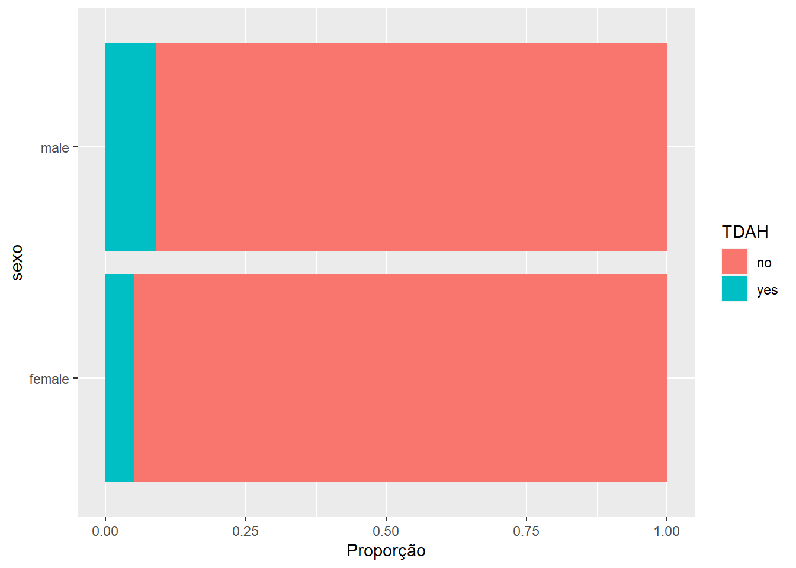
Com isto feito, é possível proceder ao cálculo do Qui-quadrado, tal como feito a seguir.
descr::CrossTable(ds_selected$sex_male,ds_selected$adhd_parent,chisq = T)$CST %>%
pander::pander()| Test statistic | df | P value |
|---|---|---|
| 41.6 | 1 | 1.117e-10 * * * |
Os resultados deixam claro que que é possível rejeitar a hipótese nula, uma vez que o valor de P é menor do que o nível de significância previamente estipulado (0.05). Isso sugere que existe uma associação entre o sexo do participante e o diagnóstico de TDAH.
Atenção: A validade das inferências dos resultados depende da adequação ou não dos pressupostos dos testes estatísticos. A avaliação destas condições é parte de um procedimento diagnóstico que deve ser sempre feito.
No teste Qui-quadrado, os principais pressupostos a ser investigados são:
Inexistência de células com valores esperados iguais a 0 e
No máximo 20% dos valores esperados serem inferiores a 5.
Ambos podem ser checados na tabela exposta anteriormente e foram atendidos.
Eventualmente, quando os pressupostos são violados, há sugestão de fazer correções nos resultados, implementar técnicas de bootstrapping e contar com outros testes, especialmente os que não pedem que os valores esperados sejam grandes (Fisher’s Exact Test, por exemplo) (Campbell, 2007). Eventualmente, colapsar categorias é uma prática comum, apesar de receber críticas da literatura.
9.3 Tamanho do efeito
Como apresentado no decorrer dos outros capítulos, os valores de P quase nunca são informativos sobre a relevância dos resultados. Por sua vez, o tamanho do efeito é uma medida objetiva e padronizada sobre um efeito observado e, com isso, é mais atrelada à importância da descoberta na pesquisa.
O tamanho do efeito mais utilizado no ambiente das análises de Qui-quadrado é o V de Cramer. Esta estatística gera valores 0-1 e é dada da seguinte maneira:
\[V=\sqrt\frac{\chi^2}{n*df}\]
Em que:
\(\chi^2\) = valor do Qui quadrado obtido
\(n\) = tamanho da amostra
\(df\) menor valor entre (Linhas - 1) ou (Colunas - 1) da tabela de contingências
A função CramerVdo pacote rcompanion gera esses resultados.
rcompanion::cramerV(ds_selected$sex_male,ds_selected$adhd_parent)## Cramer V
## 0.07647A interpretação é baseada nos graus de liberdade do Qui-quadrado e é feita da seguinte maneira:
| Graus de liberdade | Pequeno | Médio | Grande |
|---|---|---|---|
| 1\(^*\) | 0.1 | 0.3 | 0.5 |
| 2 | 0.07 | 0.21 | 0.35 |
| 3 | 0.06 | 0.17 | 0.29 |
Nota: Na maioria das vezes, o Teste Qui-quadrado conta com tabelas 2x2, o que gera 1 grau de liberdade. Assim, essa é a interpretação mais utilizada na literatura.
9.4 Execução no JASP
Para executar as rotinas no JASP, será necessário carregar a base para o programa. Com os dados devidamente importados para o programa, a apresentação de tabelas e gráficos auxiliam o pesquisador a verificar padrões diferentes nos dados. Para executar isso, é necessário acessar a seção Descriptives:
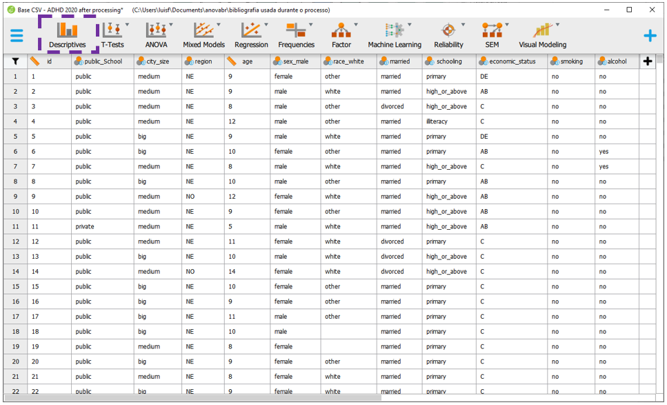
Ao clicar nesta opção, será possível eleger as variáveis que irão ser analisadas e as variáveis que irão funcionar como agrupadoras. Apesar do Qui-quadrado não trabalhar com os conceitos de VI e VD, na prática, a lista Variables irá reunir a possível variável dependente, enquanto a possível variável independente será colocada na seção Split. É importante atentar à opção Frequency tables (nominal and ordinal), que deve ser marcada quando o nível de medida da variável de interesse for nominal ou ordinal.
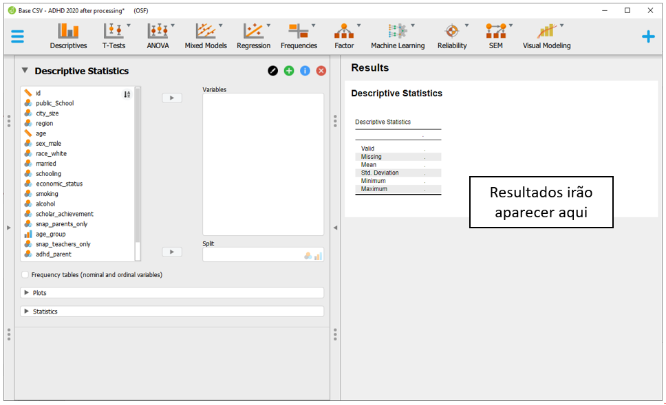
É necessário inserir a variável sex_male para Split e a variável adhd_parent para Variables. Para tabela ser apresentada corretamente, deve-se selecionar a opção Frequency tables.
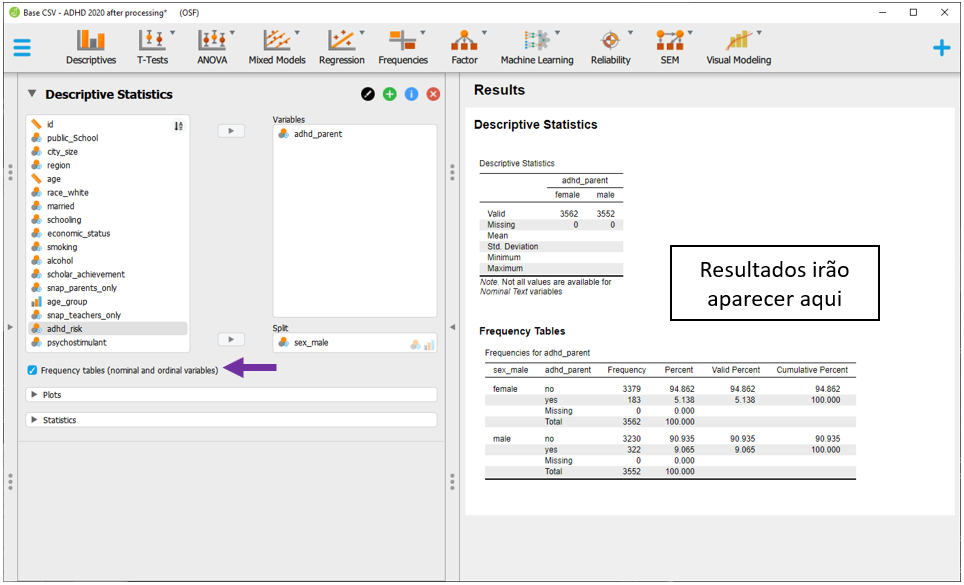
O gráfico de barras pode ser acessado clicando na opção Plots e, em seguida, Distribution plots, em Basic plots. Esse resultado é um recurso a mais para sondar os dados.
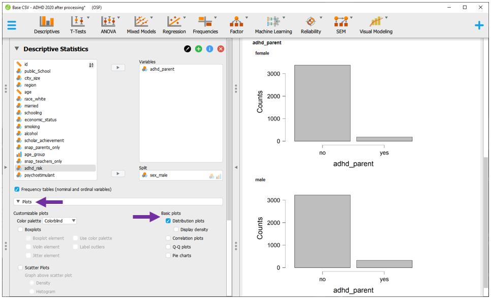
Para execução do Qui-quadrado (de associação), a tabela de contingência deve ser feita. Isso é realizado ao clicar em Frequencies e, em seguida, Contigency tables.
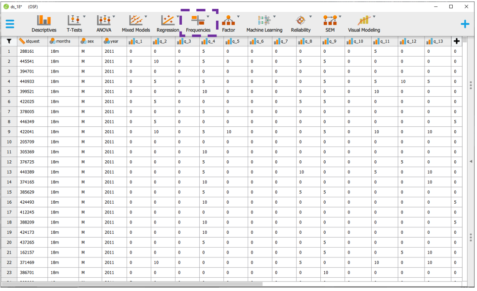
Nesta seção, será necessário indicar a variável que irá nas linhas e nas colunas. Apesar do Qui-quadrado não trabalhar com os conceitos de VI e VD, quase sempre se utiliza as linhas para inserir a variável que é, teoricamente, a VI, enquanto a VD teórica é inserida na parte colunas.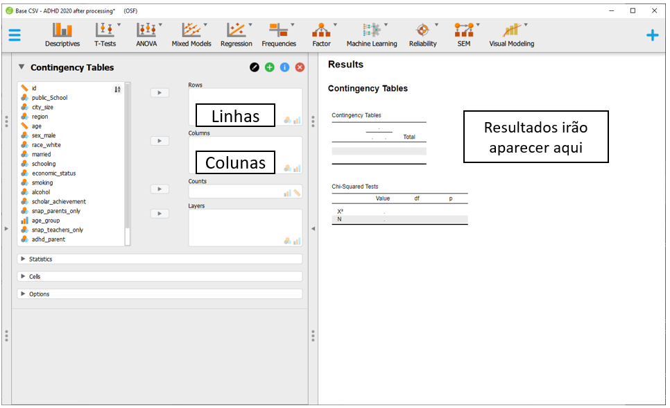
Ao inserir a variável sexo para as linhas e a variável diagnóstico para as colunas, a tabela de contingência será novamente feita e o Qui-quadrado será automaticamente calculado.
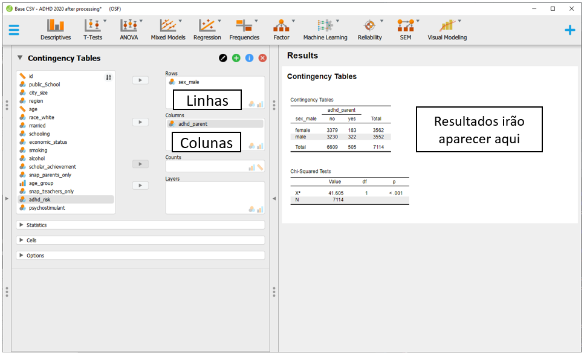
Os resultados inferenciais de interesse estão na parte inferior da apresentação e são os mesmos obtidos na etapa de execução com o R. A estatística Qui-quadrado foi 41.6, com 1 grau de liberdade e p < 0.001. Estes valores estão dispostos no retângulo roxo na imagem a seguir e podem ser, inicialmente, interpretados.
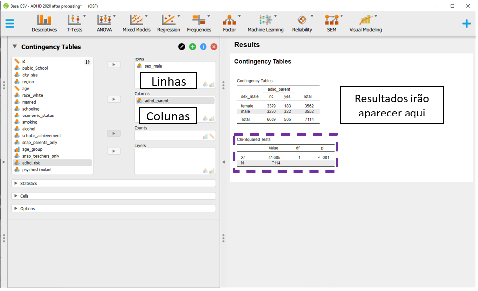
Atenção: A validade das inferências dos resultados depende da adequação ou não dos pressupostos dos testes estatísticos. A avaliação destas condições é parte de um procedimento diagnóstico que deve ser sempre feito.
A validade dos resultados depende dos pressupostos. Além disso, o tamanho do efeito precisa ser calculado para indicar a relevância dos achados. Para verificar se existem células cujos valores esperados sejam iguais a 0 e se no máximo 20% dos valores esperados são inferiores a 5, é necessário clicar em Cells.
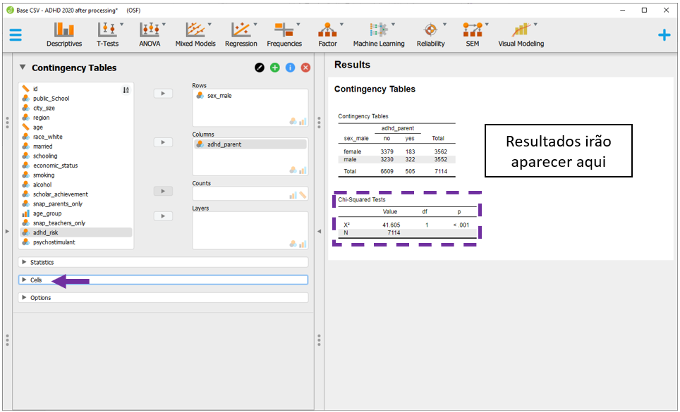
Há dois blocos específicos, Counts e Percentages. Em Counts, é necessário selecionar Expected. Em Percentages, é necessário selecionar Row. Com isso feito, os resultados poderão ser melhor analisados.
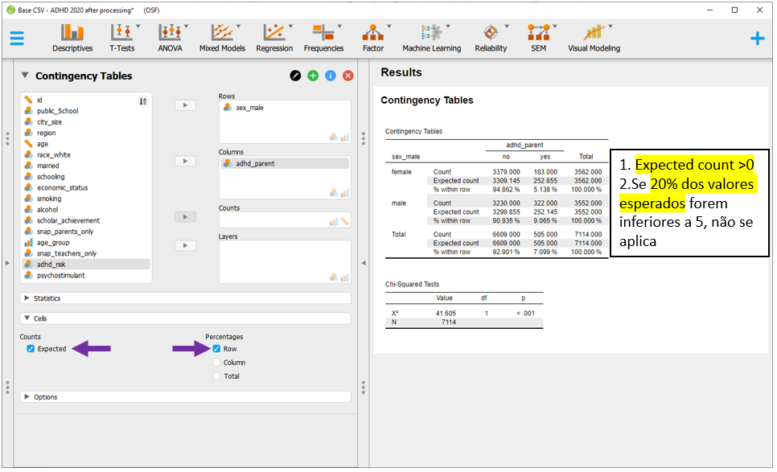
Para adicionar a medida de tamanho de efeito, é necessário ir em Statistics e, em seguida, clicar em Cramer's V.
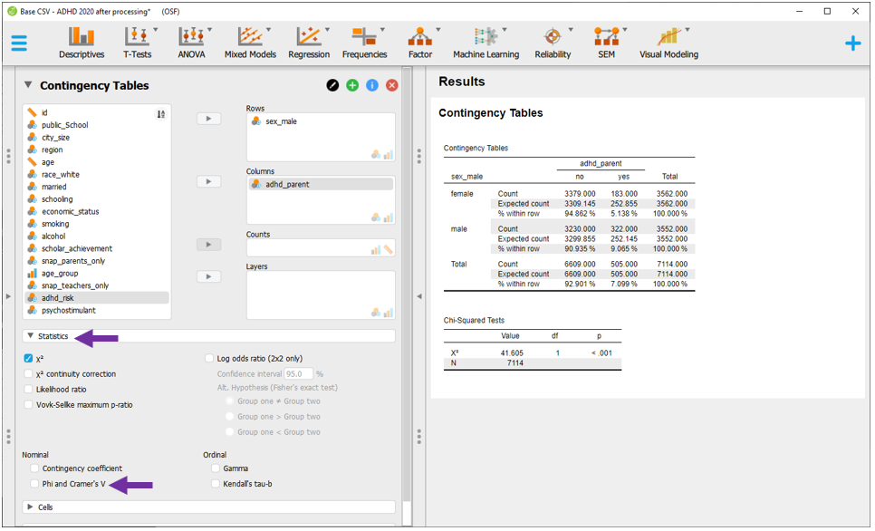
Após estas etapas realizadas, é possível analisar integralmente os resultados, em que o valor de P e o tamanho do efeito podem ser interpretados.
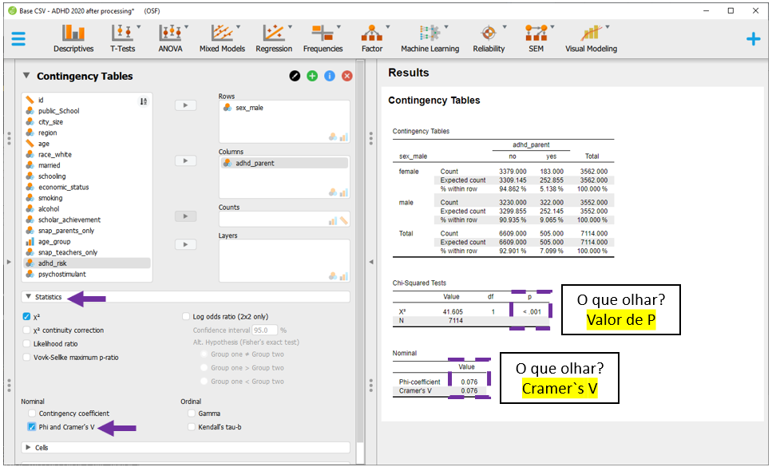
Caso os pressupostos tenham sido violados, o JASP oferece algumas saídas, tal como a correção de Yates.
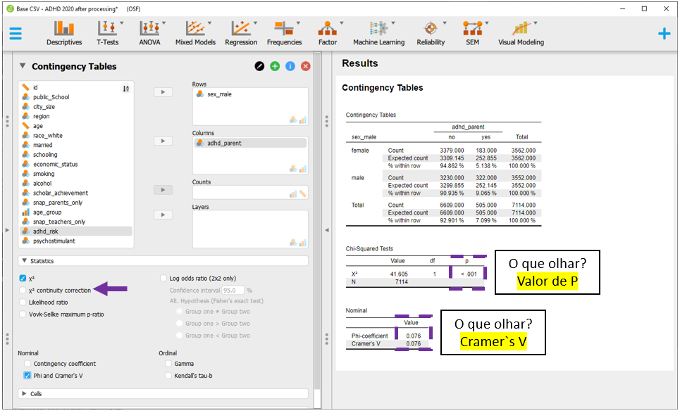
9.5 Escrita dos resultados
O principal achado desta pesquisa é que há uma associação entre o sexo da criança (masculino e feminino) e o diagnóstico de TDAH. Esta evidência já é bastante consolidada na literatura psicológica e biomédica. Abaixo uma sugestão de escrita baseada nas recomendações da American Psychological Association (APA).
::: {writing } Como escrever os resultados
A associação entre o sexo do participante e sua condição clínica (ter ou não TDAH) foi investigada por um Teste Qui-quadrado de independência. Os resultados indicaram que ambas as variáveis são associadas (X2(1) = 41.605, p < 0.01). O tamanho do efeito foi calculado pelo V de Cramer, que se mostrou pequeno 0.07. :::
9.6 Resumo
- O Qui-quadrado pode ser utilizado para um conjunto de análises realizadas em variáveis categóricas.
- Apesar de diferenças conceituais, o formato matemático é o mesmo.
- O tamanho do efeito apresenta interpretações que podem variar em função dos graus de liberdade.
9.7 Pesquisas adicionais
Are Attitudes Towards Smoking Different for Males and Females? (DOI: 10.1136/tc.2.3.201)
Nesta pesquisa, cerca de 19378 participantes que eram fumantes, ex-fumantes ou que não fumavam indicavam se concordavam que o fumo poderia provocar doenças. Os resultados indicaram que houve uma associação significativa entre o perfil de consumo de cigarro e a concordância com a afirmativa. Apesar da maioria ter responder afirmativamente que hábitos de fumo podem gerar doenças, a quantidade de participantes fumantes que concordaram com isso foi significativamente menor do que a esperada.The Gender Gap in STEM Fields: The Impact of the Gender Stereotype of Math and Science on Secondary Students’ Career Aspirations (DOI: 10.3389/feduc.2019.00060) Neste estudo, 1364 estudantes do ensino médio (na Suíça) responderam sobre suas aspirações para o curso de graduação. Houve uma associação significativa entre o sexo do participante seu interesse por áreas de ciências e tecnologia. A frequência de mulheres interessadas na área foi menor do que a esperada, enquanto a frequência dos homens foi superior à esperada.
Intrinsic honesty and the prevalence of rule violations across societies (DOI: 10.1038/nature17160) Nesta pesquisa, 2568 participantes de diferentes países participaram de uma atividade que consistia em jogar um dado dentro de um copo e falar o número que saiu para o pesquisador. Apenas o participante poderia ver o número e não havia nenhuma forma do pesquisador conferir se o número falado pelo participante era o número que, de fato, havia saído. Por características probabilísticas, se espera que cada uma das faces do dado seja igualmente selecionada. Assim, a ocorrência de uma alta proporção de valores altos indicaria desonestidade. O Qui-quadrado utilizado foi o de aderência.
9.8 Questões
(Retirado de Analista Judiciário Estatística, TJ ES, CESPE, 2010) No teste qui-quadrado para aderência, a estatística de teste baseia-se na comparação entre o número observado e o número esperado de elementos em cada categoria. Nesse caso, sob a hipótese nula, a estatística desse teste segue aproximadamente uma distribuição qui-quadrado, desde que o número esperado de elementos em cada categoria seja suficientemente grande.
a) Certo.
b) Errado.(Retirado de ANAC, Especialista em Regulação de Aviação Civil, CESPE, 2012) A diferença entre um teste qui-quadrado para a associação entre dois fatores e um teste qui-quadrado para a homogeneidade (das respostas de um fator em função de outro fator) é que, no primeiro, a estatística do teste é calculada supondo a independência entre os fatores, enquanto, no segundo, essa suposição não é necessária.
a) Certo.
b) Errado.
Gabarito: 1-a; 2-b